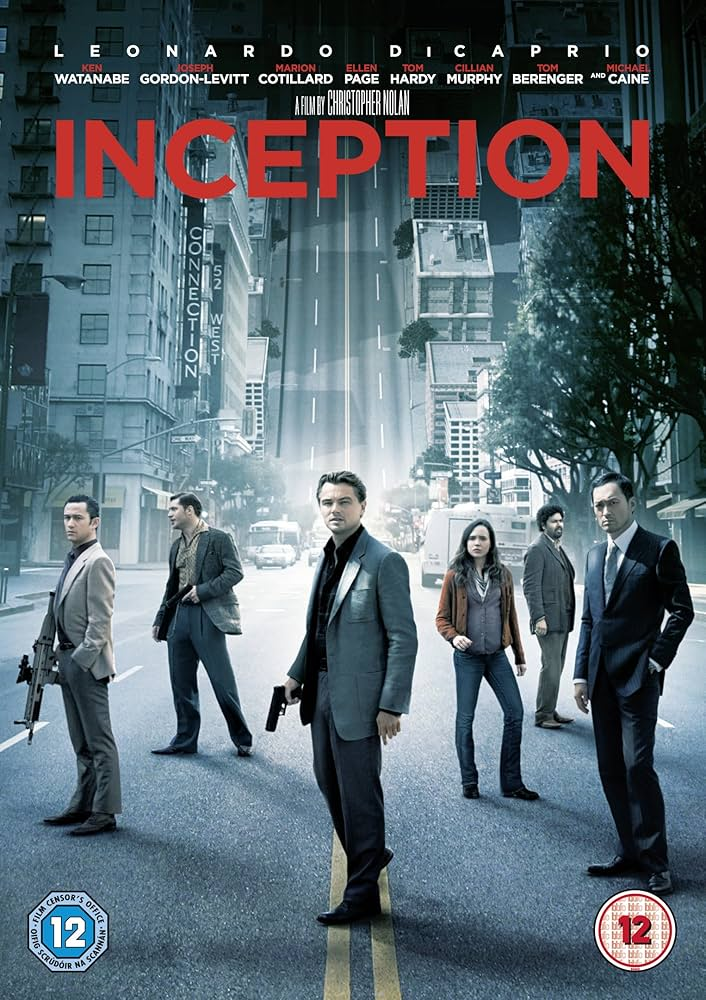
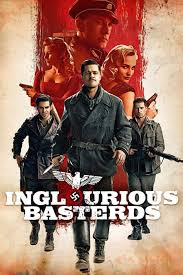
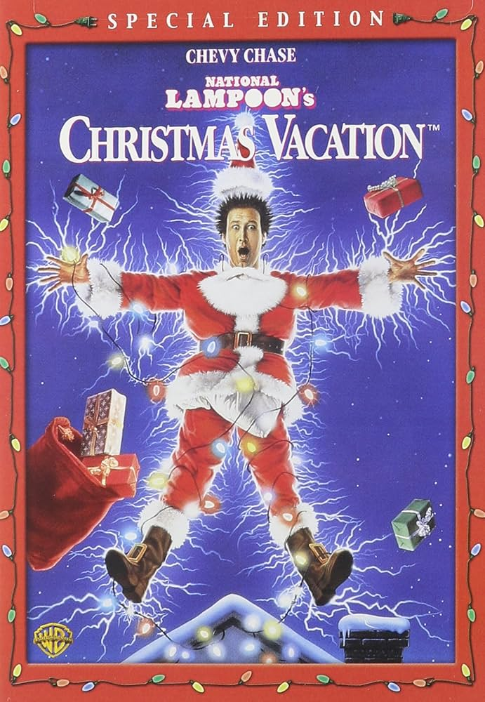

The Wolf of Wall Street
In 1987, Jordan Belfort (Leonardo DiCaprio) takes an entry-level job at a Wall Street brokerage firm. By the early 1990s, while still in his 20s, Belfort founds his own firm, Stratton Oakmont. Together with his trusted lieutenant and a merry band of brokers, Belfort makes a huge fortune by defrauding wealthy investors out of millions. However, while Belfort and his cronies partake in a hedonistic brew of sex, drugs and thrills, the SEC and the FBI close in on his empire of excess.

Taxi Driver
Suffering from insomnia, disturbed loner Travis Bickle (Robert De Niro) takes a job as a New York City cabbie, haunting the streets nightly, growing increasingly detached from reality as he dreams of cleaning up the filthy city. When Travis meets pretty campaign worker Betsy (Cybill Shepherd), he becomes obsessed with the idea of saving the world, first plotting to assassinate a presidential candidate, then directing his attentions toward rescuing 12-year-old prostitute Iris (Jodie Foster).

Before Sunrise
On his way to Vienna, American Jesse (Ethan Hawke) meets Celine (Julie Delpy), a student returning to Paris. After long conversations forge a surprising connection between them, Jesse convinces Celine to get off the train with him in Vienna. Since his flight to the U.S. departs the next morning and he has no money for lodging, they wander the city together, taking in the experiences of Vienna and each other. As the night progresses, their bond makes separating in the morning a difficult choice.

Inception
Dom Cobb (Leonardo DiCaprio) is a thief with the rare ability to enter people's dreams and steal their secrets from their subconscious. His skill has made him a hot commodity in the world of corporate espionage but has also cost him everything he loves. Cobb gets a chance at redemption when he is offered a seemingly impossible task: Plant an idea in someone's mind. If he succeeds, it will be the perfect crime, but a dangerous enemy anticipates Cobb's every move.
Just Go With It
His heart recently broken, plastic surgeon Danny Maccabee (Adam Sandler) pretends to be married so he can enjoy future dates with no strings attached. His web of lies works, but when he meets Palmer (Brooklyn Decker) -- the gal of his dreams -- she resists involvement. Instead of coming clean, Danny enlists Katherine (Jennifer Aniston), his assistant, to pose as his soon-to-be-ex-wife. Instead of solving Danny's problems, the lies create more trouble.

Inglourious Basterds
It is the first year of Germany's occupation of France. Allied officer Lt. Aldo Raine (Brad Pitt) assembles a team of Jewish soldiers to commit violent acts of retribution against the Nazis, including the taking of their scalps. He and his men join forces with Bridget von Hammersmark, a German actress and undercover agent, to bring down the leaders of the Third Reich. Their fates converge with theater owner Shosanna Dreyfus, who seeks to avenge the Nazis' execution of her family.
1917
During World War I, two British soldiers -- Lance Cpl. Schofield and Lance Cpl. Blake -- receive seemingly impossible orders. In a race against time, they must cross over into enemy territory to deliver a message that could potentially save 1,600 of their fellow comrades -- including Blake's own brother.

Fight Club
A depressed man (Edward Norton) suffering from insomnia meets a strange soap salesman named Tyler Durden (Brad Pitt) and soon finds himself living in his squalid house after his perfect apartment is destroyed. The two bored men form an underground club with strict rules and fight other men who are fed up with their mundane lives. Their perfect partnership frays when Marla (Helena Bonham Carter), a fellow support group crasher, attracts Tyler's attention.
Full Metal Jacket
Stanley Kubrick's take on the Vietnam War follows smart-aleck Private Davis (Matthew Modine), quickly christened "Joker" by his foul-mouthed drill sergeant (R. Lee Ermey), and pudgy Private Lawrence (Vincent D'Onofrio), nicknamed "Gomer Pyle," as they endure the rigors of basic training. Though Pyle takes a frightening detour, Joker graduates to the Marine Corps and is sent to Vietnam as a journalist, covering -- and eventually participating in -- the bloody Battle of Hué.

Whiplash
Andrew Neiman (Miles Teller) is an ambitious young jazz drummer, in pursuit of rising to the top of his elite music conservatory. Terence Fletcher (J.K. Simmons), an instructor known for his terrifying teaching methods, discovers Andrew and transfers the aspiring drummer into the top jazz ensemble, forever changing the young man's life. But Andrew's passion to achieve perfection quickly spirals into obsession, as his ruthless teacher pushes him to the brink of his ability and his sanity.
The Hunger Games
In what was once North America, the Capitol of Panem maintains its hold on its 12 districts by forcing them each to select a boy and a girl, called Tributes, to compete in a nationally televised event called the Hunger Games. Every citizen must watch as the youths fight to the death until only one remains. District 12 Tribute Katniss Everdeen (Jennifer Lawrence) has little to rely on, other than her hunting skills and sharp instincts, in an arena where she must weigh survival against love.

National Lampoon's Christmas Vacation
As the holidays approach, Clark Griswold (Chevy Chase) wants to have a perfect family Christmas, so he pesters his wife, Ellen (Beverly D'Angelo), and children, as he tries to make sure everything is in line, including the tree and house decorations. However, things go awry quickly. His hick cousin, Eddie (Randy Quaid), and his family show up unplanned and start living in their camper on the Griswold property. Even worse, Clark's employers renege on the holiday bonus he needs.